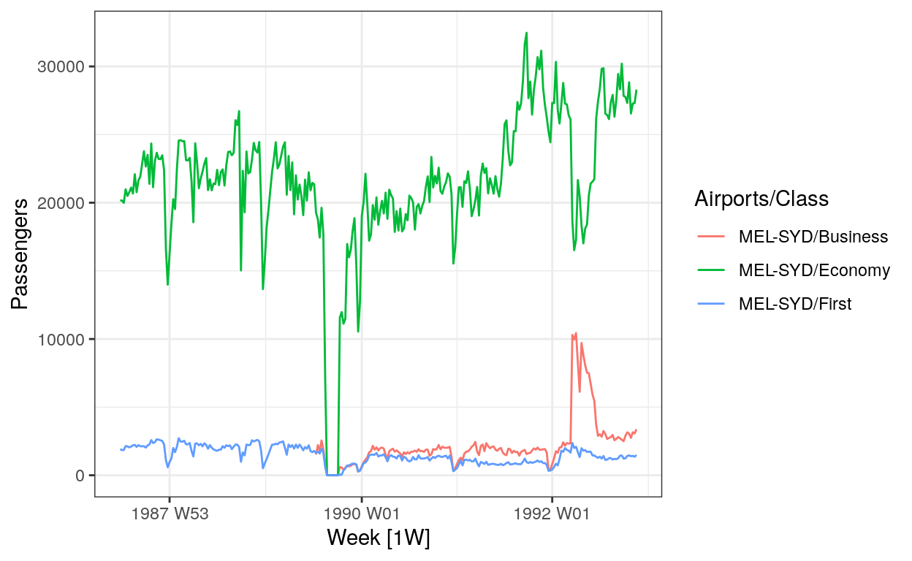
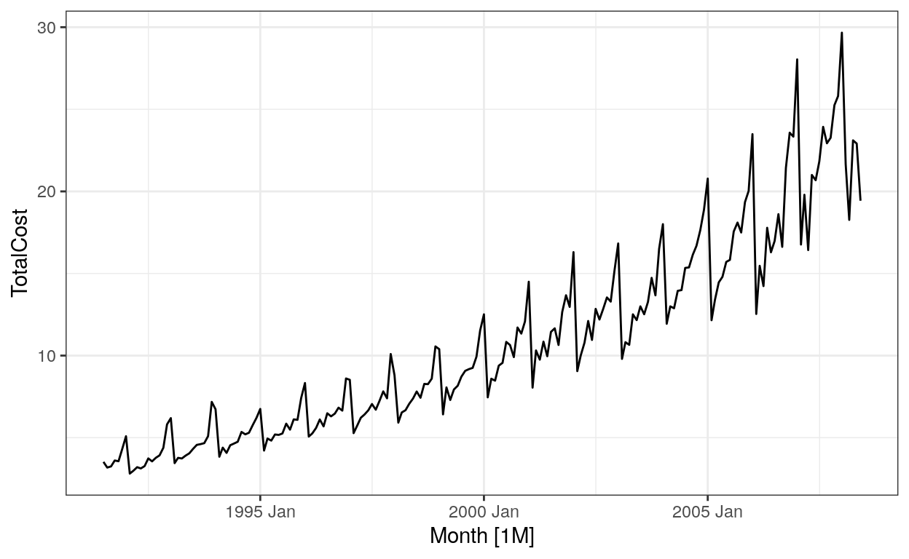
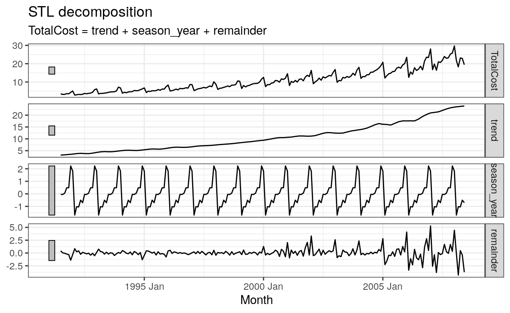

autoplot will make a time plot from a tsibble. Here’s an example:
ansett %>%
filter(Airports == "MEL-SYD") %>%
autoplot(Passengers) # This calls fabletools::autoplot.tbl_ts
Under the hood, that’s just making a geom_line plot. Try doing that by hand: think about what the aesthetic mappings should be. You should get a nearly-identical plot (there may be differences in the labeling.) Solution is on the slides if needed.
ansett %>%
filter(Airports == "MEL-SYD")
# task: %>% ggplot(aes(___)) + geom_line()Let’s practice aggregating tsibbles to change the level of granularity. vic_elec has electric demand data for every half hour. Let’s try aggregating over various time ranges. Try the following different index_bys:
time = floor_date(Time, '1 hour'))lubridate::date(Time))yearweek(Time))yearmonth(Time))Observe what different patterns appear at different temporal granularity. Why might it be important that we chose to aggregate by the mean instead of the sum in these plots, especially the monthly plot?
vic_elec %>%
index_by(Time) %>%
summarize(Demand = mean(Demand)) %>% # try changing this to `sum`!
autoplot(Demand)Important note: In colloquial usage, there are 4 seasons per year. But in time series analysis, “seasonal” can mean any effect with a known period.
Let’s practice looking at different seasonal periods. What patterns do you observe in electrical demand when looking at each of the following seasonal plots?
period = 'year')period = 'week')period = 'day') (this may take more time to run than the others; can you think of why?)Which seasonal plot is most informative? Least informative? Why?
vic_elec %>% gg_season(Demand, period = "year")Often a time series will have components that change at different intervals. For example, the prescription drug billing data discussed in the textbook has a generally increasing trend but with spikes around the beginning of each year because of year-end buying patterns.
a10 <-
PBS %>%
filter(ATC2 == "A10") %>%
select(Month, Concession, Type, Cost) %>%
summarise(TotalCost = sum(Cost) / 1e6)a10 %>% autoplot(TotalCost)
We’ll use the STL (“Seasonal and Trend decomposition using Loess”) method to separate the time series into a sum of trend and seasonal components. We won’t be discussing time series decompositions formally in this class, but I wanted you to know that this is possible. See the textbook for more details:
a10_components <- a10 %>%
model(
STL(TotalCost ~ trend(window = 12) +
season(window = "periodic"),
robust = TRUE)) %>%
components()
a10_components %>%
autoplot()
a10_trend <- a10_components %>% select(trend)
a10_seasonal <- a10_components %>% select(seasonal = season_year)We’ll first look at the correlogram of the entire series, then look at each component.
a10 %>%
ACF(TotalCost, lag_max = 50) %>%
autoplot()Exercises:
TotalCost? What values are larger than their neighbors? What lags do they occur at? (note the units of the x-axis.) Why might that make sense for data with a yearly “seasonal” pattern?a10_trend (the variable name is trend). What does the ACF of a trend look like? Why might that make sense?a10_seasonal (the variable name is season). What does the ACF of a seasonal pattern look like? Why might that make sense?To run any code chunk from this tutorial in your own environment, use:
library(tidyverse)
library(tsibble)
library(lubridate)
library(fpp3)
theme_set(theme_bw())
a10 <-
PBS %>%
filter(ATC2 == "A10") %>%
select(Month, Concession, Type, Cost) %>%
summarise(TotalCost = sum(Cost) / 1e6)
a10_components <- a10 %>%
model(
STL(TotalCost ~ trend(window = 12) +
season(window = "periodic"),
robust = TRUE)) %>%
components()
a10_components %>%
autoplot()
a10_trend <- a10_components %>% select(trend)
a10_seasonal <- a10_components %>% select(seasonal = season_year)